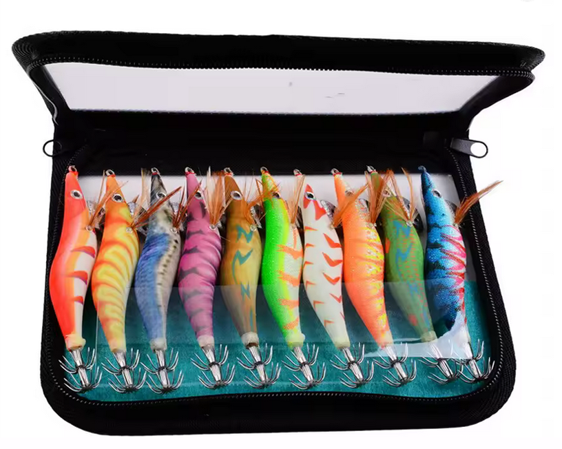

Este estuche de 10 señuelos tipo camarón es una de esas opciones que encajan
perfectamente con la filosofía Egis Low Cost:
mucho material, funcional y a un precio muy contenido.
Incluye 10 jibioneras con ojos 3D, efecto luminoso y anzuelo doble,
todo organizado en una bolsa/estuche de transporte.
Ideal para calamar y sepia, especialmente si no quieres jugarte un egi caro en cada lance.

🔥 Puntos fuertes del pack
- ✔ Pack de 10 unidades con estuche incluido.
- ✔ Diseño camarón con ojos 3D, más realista bajo el agua.
- ✔ Efecto glow inferior, ideal para pesca nocturna.
- ✔ Anzuelo doble afilado, buena capacidad de clavada.
- ✔ Varios colores para adaptarse a distintas condiciones.
- ✔ Precio muy contenido (aprox. 7–13 € todo el conjunto).
Características técnicas
- Cantidad: 10 señuelos por set
- Formato: Camarón / Shrimp jig
- Tallas incluidas: 2.5# · 3.0# · 3.5#
- Ojos: Ojos 3D simulados
- Tipo: Cebo duro con sistema de contrapeso
- Efecto: Glow inferior (reactivable con luz)
- Contenido: 10 señuelos + estuche
🌙 Efecto luminoso y acción
Los señuelos incorporan diseño fluorescente nocturno,
pensado para aprovechar la atracción visual del calamar.
El brillo se va reduciendo con el tiempo, pero se puede
reactivar fácilmente con una linterna o luz potente.
El cuerpo del camarón incluye bolas internas de acero que ayudan
a mantener el centro de gravedad equilibrado, consiguiendo
una entrada rápida en el agua y una postura estable durante el descenso.
🎯 ¿Para quién es este pack?
- ✔ Pescadores que empiezan en el eging.
- ✔ Zonas complicadas donde se pierden muchos señuelos.
- ✔ Como estuche de repuesto o para llevar siempre encima.
- ✔ Pesca nocturna en puertos, espigones y escolleras.
⚠️ ¿Para quién NO es?
- ❌ Pescadores que buscan acabados premium o marcas top.
- ❌ Jornadas muy técnicas con calamar extremadamente receloso.
🔥 Conclusión Egis Low Cost
No son los señuelos más sofisticados del mercado,
pero cumplen con lo importante:
pescan, cuestan poco y no duele perderlos.
Un pack muy recomendable para quien quiere
pescar calamar sin gastar de más.